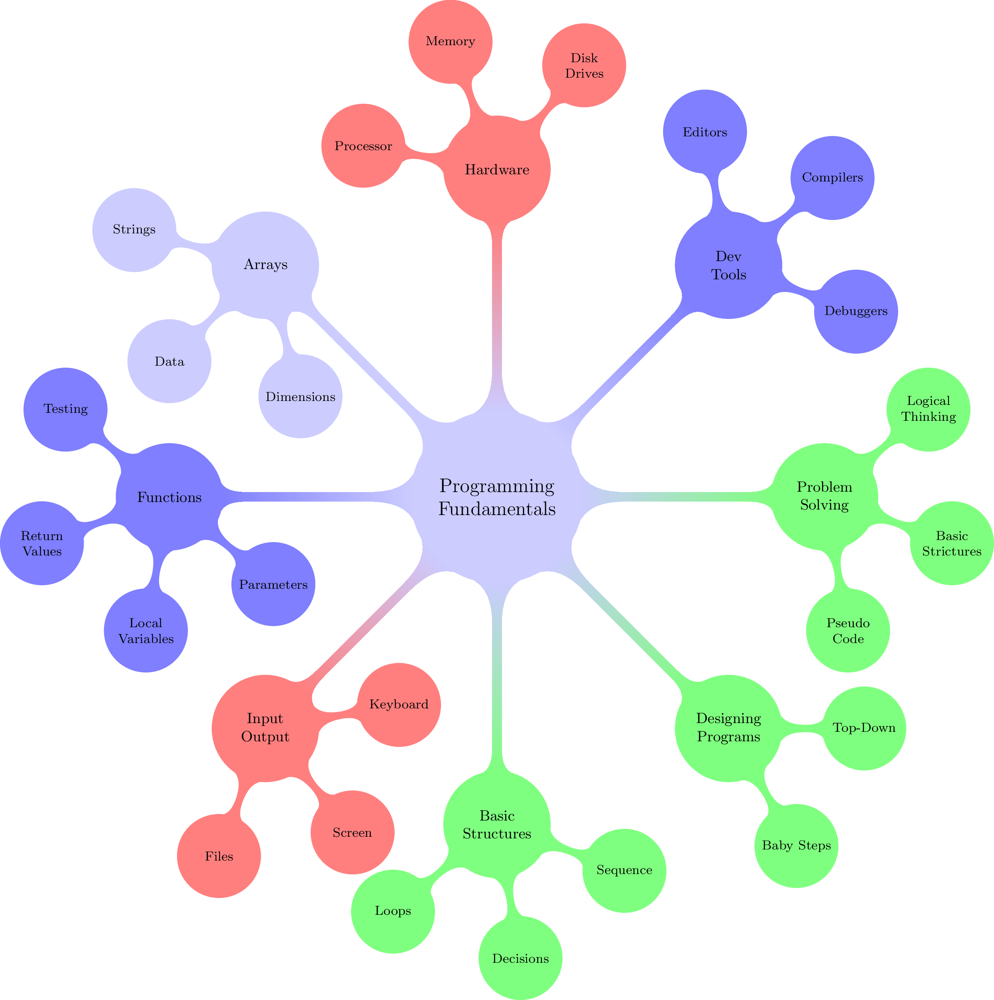

Course Topics¶
An interesting way to visualize the topics we will be studying in this course is something called a “MindMap”, a tool designed to show how topics are broken down into subtopics, and further broken down into subsubtopics. This way of visualizing things helps show how topics are related.
The learning objectives for this course are given here:
- Recognize basic computer hardware architecture constructs such as instructions sets, memory, CPU, external devices, and data representation.
- Use programming software tools including compilers, linkers, editors, and integrated development environments to create and test programs.
- Demonstrate problem solving skills by developing algorithms to solve problems incorporating the concept of variables and constants of basic data types in a computer program.
- Utilize programming constructs which uses input and output devices for acquiring and displaying data including sequential files.
- Create programming designs which includes step-by-step algorithms and desk checking to validate problem solutions.
- Incorporate the use of sequential, selection and repetition control structures into the algorithms implemented as computer programs.
- Demonstrate an understanding of structured design by implementing programs with functions and passing of parameters to solve more complex problems and to promote the concept of efficient use of code.
- Design and implement programs using arrays.
To build the mindmap, we need to reduce these topics to a simpler form:
- Computer Hardware
- Program Development Tools
- Problem Solving
- Input and Output
- Designing Programs
- Basic Structures
- Using Functions
- Using Arrays
Here is the topic map we will follow:
